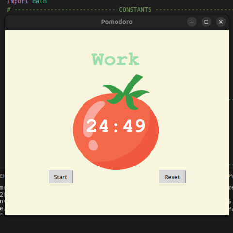

Time tasks with the Pomodoro App
One of my early ventures into setting up an UI in python with TKinter, this app is purely for timing your tasks within Pomodoro principles.
The program uses TKinter for the UI, including the buttons, and then the timer is just set over the background tomato image.
The program logic is fairly straight forward, it just times 25 minute intervals and alerts you when they are up, you also have the buttons which allow you to reset the timer which sets it back to 25:00 and stops it, and then you can start once more of course by using the start button.